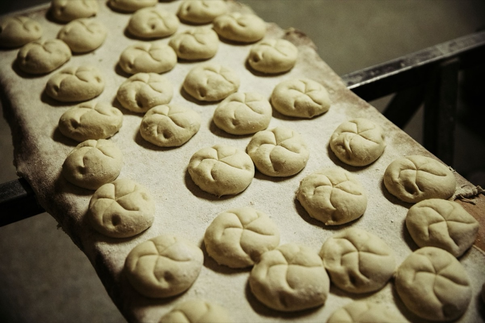

Berlins älteste
Bäckerei
Seit 1906 im Prenzlauer Berg. Fünf Generationen, ein Ort, kein bisschen verstaubt. Sauerteig, der 16 Stunden Zeit bekommt.

Heute
geöffnet
bis 18.30
geöffnet
bis 18.30
1906
Konzept B von 3 · „Ost-Moderne“ · interner Design-Entwurf
Seit 1906 im Prenzlauer Berg. Fünf Generationen, ein Ort, kein bisschen verstaubt. Sauerteig, der 16 Stunden Zeit bekommt.
Kaiserzeit, zwei Weltkriege, DDR, Wende. Gebacken wurde immer an derselben Adresse.

Von den Berlinern zum besten Brot gewählt.

DDR-Rezept, kompakt, krümelt kaum.

Pfannkuchen, Kameruner, Mohnzopf.
Hochzeit, Geburtstag, Firmenfeier. Bestellung telefonisch oder im Laden.